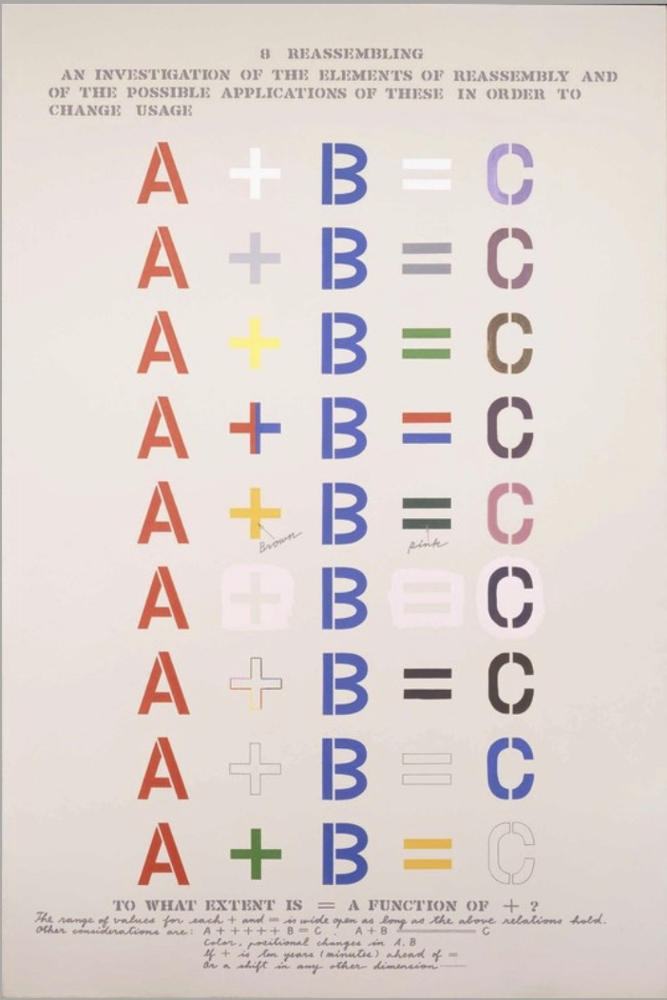
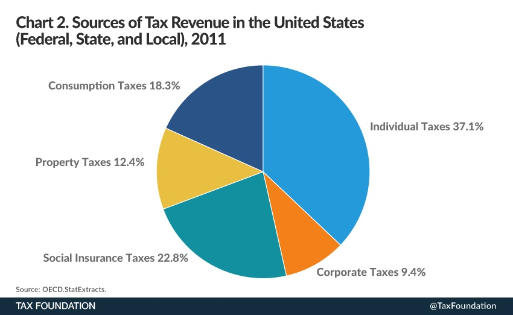

By Alec Fisher
The analysis of “The Mechanism of Meaning” and authors Shusaku Arakawa and Madeline Gins brings up an interesting point on the relationship between diagrammatic format and fine art. Arakawa and Gins’s book is hypothesized to be influenced by “[Marcel] Duchamp’s profound engagement with the diagram as an artistic ‘visual language’”, an idea we seem to use on a day-to-day basis without looking deep into its conceptual meaning. In my eyes, a diagram is a way of visual communication through the means of symbolic representation. They are the source of connecting meaning to multiple “things” on one page or document. When using the word “diagram” on Google Images, a wide range of venn diagrams, network charts, and bar graphs appear; before reading this blog post, this is what I imagined in my head when the word “diagram” appeared on the screen. Blog author Michael Whittle completely warped and shaped a whole new view on the meaning of diagrams. We can produce a diagram for practically anything - even on the functionality of a bright yellow fruit such as the lemon. What we can distinguish with diagrams is whether or not they serve as a representation for art or non art. One for art has meaning in both the literal structure of the diagram and the visual techniques utilized within the piece.
I will use the example of “Reassembling”; this diagram in Arakawa and Gins’s book reflects on a simple formula following the pattern “A + B = C”. At the same time, this image analyzes the different shapes and colors of the mathematical symbols used in the equation. Therefore, I identify this image as a diagram for art.
On the flipside, I see a diagram for non-art as the results from my search on Google Images. A pie chart comparing sources of tax revenue in the United States serves as a good visual representation for our eyes and mind to understand. Compared to the lemon diagram though, there is no further significance to the diagram that we can extract and use; it is just a visual representation of data and does not serve as a form of art. Although both are distinguished by investigation of meaning, diagrams serve as philosopher C.S. Peirce describes them: “moving pictures of thought”.